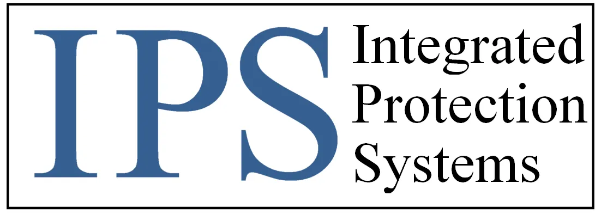

Integrated Protection Systems x Rev.io
IPS is evaluating whether Rev.io can become the operational system for growth: CRM, quoting, ticketing, dispatch, mobile field work, inventory, project workflow, recurring agreements, billing, reporting, and QuickBooks integration in one connected motion.
A security technology integrator built around service, support, and connected-site infrastructure.
Business profile
IPS is headquartered in Brooklyn Park, Minnesota and serves mid-to-large and regional businesses with video surveillance, access control, alarms, AV, structured cabling, WiFi, and fiber installs.
Operating footprint
The Notion notes identify offices in Orlando, Atlanta, Phoenix, Texas, and Tampa, with about 55 employees split between back-office users and field technicians.
Why Rev.io matters
Their work crosses sales, design, inventory, projects, service calls, recurring contracts, mobile field execution, and accounting — exactly where disconnected systems create operational drag.
Source basis: IPS website and Rev.io meeting notes from July 22, July 24, July 27, and August 18.
IPS is trying to support growth heading into 2027 without dragging disconnected Simpro, Zoho, GPS, payroll, and accounting workflows behind it.
Growth requires cleaner systems
Top-line revenue growth is a stated priority, with new sales hiring in Florida and a plan to add senior sales capacity. That growth puts pressure on CRM, quoting, contracts, and reporting.
Service contracts are expanding
IPS is actively selling tiered service contracts to grow recurring revenue, but service contracts were difficult enough in Simpro that the CEO used APIs and AI to generate contract quotes.
Current contracts create urgency
Simpro and ConnectTeam are month-to-month, Zoho renews in February, and the team is already evaluating whether Rev.io can consolidate the stack before 2027 planning locks in.
The core problem is not one missing feature. It is operational fragmentation across the entire quote-to-cash and service lifecycle.
Disconnected Simpro + Zoho workflow
Simpro handles quoting, scheduling, inventory, projects, and invoicing; Zoho is used for service tickets only. The integration is clunky, and ticket email threading creates friction.
Field time is unreliable
Technicians may touch Paycom, ConnectTeam, and Simpro every day. Multiple clock-ins are easy to miss, weakening job costing, P&L visibility, and billing confidence.
No true CRM engine
Sales activity is not fully tracked today. Simpro is treated as a quasi-CRM, but it lacks the customer history, pipeline visibility, and lead management IPS needs.
Reporting is too hard
IPS needs clean reporting on response times, resolution times, open tickets, oldest tickets, job costing, inventory, project profitability, and contract performance — without separate platform gymnastics.
Rev.io’s value case is better job-cost visibility, fewer duplicate workflows, cleaner service execution, and a faster path from work performed to revenue recognized.
Protect project profitability
Cleaner technician time, parts usage, inventory, and job-cost tracking can make project profitability visible earlier instead of after accounting cleanup.
Consolidate field work
Mobile ticket history, geofencing, travel/work timers, photos, signatures, parts, Revy dictation, and offline mode reduce dependence on multiple field apps.
Accelerate quote-to-work
CRM, opportunity tracking, quotes, product catalog, e-signature, tax automation, and multi-location quoting can reduce handoffs between sales and operations.
Improve recurring revenue control
Agreements can manage recurring services, hour buckets, coverage rules, billing frequencies, profitability, renewals, and service-contract reporting in one place.
ROI assumptions are directional until IPS confirms quote volume, ticket volume, project count, agreement count, current admin hours, billing exception rate, and final user mix.
The next proof point is showing how project workflow, invoicing, and service contracts run end-to-end without recreating today’s disconnected stack.
Must validate
- Project workflow from quote through tasks, tickets, parts, labor, invoicing, and profitability
- Service contracts / agreements with recurring services, hour buckets, coverage rules, and automated billing
- Mobile technician flow with travel/work timers, geofencing, notes, photos, inventory, and signatures
- Reporting for job costing, ticket KPIs, oldest tickets, contract profitability, and inventory
Systems to map
- Simpro: quoting, scheduling, inventory, projects, invoicing
- Zoho: service tickets / email flow
- QuickBooks Online or Desktop accounting path
- Paycom payroll clock-in remains separate
- ConnectTeam / Verizon Connect GPS replacement decision
- PSA buying group, ADI, Ingram Micro, ScanSource, SureWeb, TD Synnex, and Portal.io distributor/catalog workflows
Stakeholders to win
- Andrew Powell: owner/CEO and service/account management lens
- John West: president/owner and sales management lens
- Sheila Jennings: office management, accounting, and HR lens
- Mark: IT director and solution-vetting lead
- Field technicians and service coordinators who live in mobile, dispatch, and tickets
Open questions
Finalize standard versus field-only user counts, confirm QuickBooks path, determine whether AIA/retainage matters, validate PSA buying group integration status, and confirm September 8 agenda coverage.
Pricing frame
Prior pricing discussed was roughly $3,400/month recurring and about $5,000 implementation, with standard users including mobile and field-only mobile users priced separately. Final pricing depends on user mix.
Use the next session to turn platform interest into operational confidence and a clear commercial path.
Send recap
Rev.io sends a concise follow-up covering the problems heard, modules shown, pricing context, and remaining validation items.
Confirm attendees
Ensure Andrew, Mark, Sheila, John, service, accounting, and operations stakeholders are aligned for the next demo.
Run focused demo
Show project workflow, invoicing, service contracts, agreements, mobile field work, inventory, reporting, and QBO/QBD integration.
Lock data needed
Collect user counts, current software spend, quote/ticket/project volumes, contract counts, and integration requirements.
Build final business case
Translate consolidation, time capture, reporting, and recurring-contract control into a quantified implementation and ROI plan.
Recommended positioning: “Rev.io gives IPS one operating layer for growth — from sales and service through field execution, billing, reporting, and revenue management.”